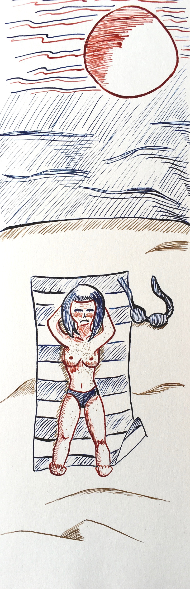

Inktober 2018 - J.3 : Rôti
Il y a quelques années de cela, lors d’un voyage en Roumanie, j’ai assisté, estomaquée, à une scène ahurissante. Des gens étaient allongés en maillots de bain sur un barrage de béton pour bronzer. Hallucinant. Le thème du jour m’a immédiatement fait penser à ce moment fatidique.
Le format du dessin est plus ou moins anodin. En fait, il s’agit d’une chute de papier. Le fait qu’il ressemble à un marque-page me plaît bien, car ça signifie que lorsque l’on est occupé à se détendre sur la plage, tout en bouquinant, on peut se souvenir que le soleil est mauvais pour la peau et qu’il faut se protéger. XD
Aujourd’hui, j’ai utilisé de l’encre rouge, bleue et du brou de noix (sur du papier plus épais, ce qui est top). Je réalise que je ne sais pas comment m’y prendre avec ma plume. Par exemple, tracer des traits fins, épais, droits ou croisés n’est pas naturel du tout pour moi. Si je dois faire apparaître des zones d’ombres, je ne sais pas comment remplir la zone. Le dessin à la plume n’est pas une technique qui me parle. Je retenterai, pour voir. Mon but désormais est de m’améliorer dans cette technique.
